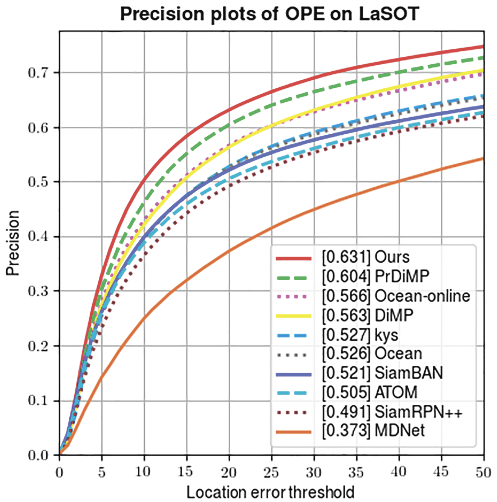
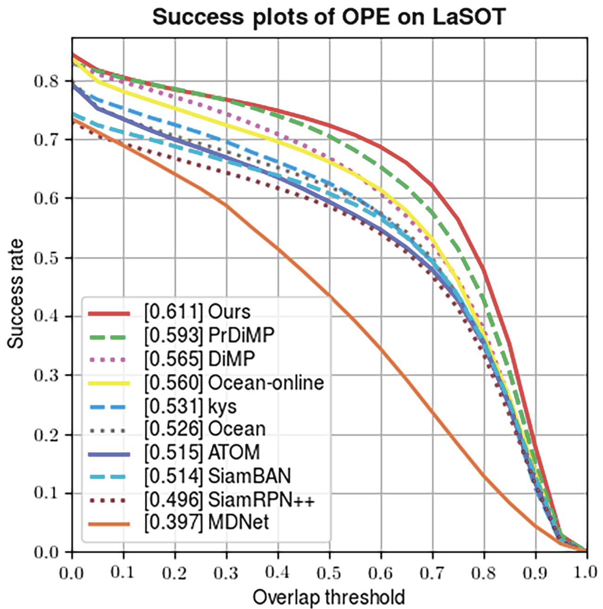
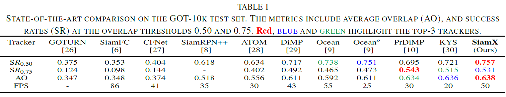
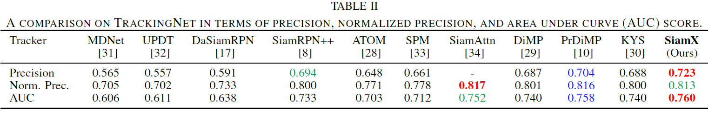

Siamese network based trackers have achieved significant progress in visual object tracking. For the sake of speed, they mainly rely on offline training to learn a monolevel feature correlation between a target template and a search region. During the tracking period, they use a fixed strategy to infer target positions over sequences regardless of target states. However, such approaches are vulnerable in case of challenging situations e.g. large variance, presence of distractors, fast motion, or target disappearing and the like. In this paper, we propose a new tracking framework, referred to as SiamX, by exploiting cross-level Siamese features to learn robust correlations between the target template and search regions, and also distinct inference strategies to prevent tracking loss and realize fast target re-localization. Extensive experiments on four benchmarks including VOT-2019, LaSOT, GOT-10k, and TrackingNet show our method significantly enhances the tracker's ability to resist variance and interference, and achieve state-of-the-art results at around 50 FPS.
Figure 1. Tracking results of using different strategies in out-of-view scenarios. The blue line represents the classification score while the orange line represents the IoU between ground truth and tracking results. On each snapshot, the rectangle denotes target estimates while dashed lines denote search boundaries. Adaptive tracking enables the tracker to return normal quickly.
Figure 2. A comparison of expected average overlap (EAO) and tracking speed on VOT-2019.
 Figure 3. Success and precision plots on LaSOT.
 @inproceedings{hhuang2022siamx,
title = {SiamX: An Efficient Long-term Tracker Using Cross-level Feature Correlation and Adaptive Tracking Scheme},
author = {Huang, Huajian and Yeung, Sai-Kit},
booktitle = {International Conference on Robotics and Automation (ICRA)},
year = {2022},
organization={IEEE}
}Acknowledgements
This research project is partially supported by an internal grant from HKUST (R9429).